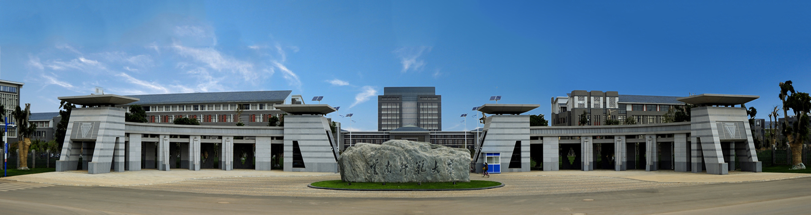

云南师范大学数学系列会议
Mathematics Conference Series hosted by Yunnan Normal University
Department of Mathematics, Yunnan Normal University, Kunming, China.
Yunnan Key Laboratory of Modern Analytical Mathematics and Applications, Kunming, China.
Upcoming Conferences
Finished Conferences
第二届云师数学前沿讲习班
YNNU Advanced Workshop in Mathematics II, 2025
第一届云师数学前沿讲习班
YNNU Advanced Workshop in Mathematics I, 2024
2024年非线性分析与偏微分方程学术研讨会
2024 Workshop on Nonlinear Analysis and Partial Differential Equations
2024年非线性分析青年学者论坛
2024 Young Scholars Forum on Nonlinear Analysis
Last updated: April 16, 2025